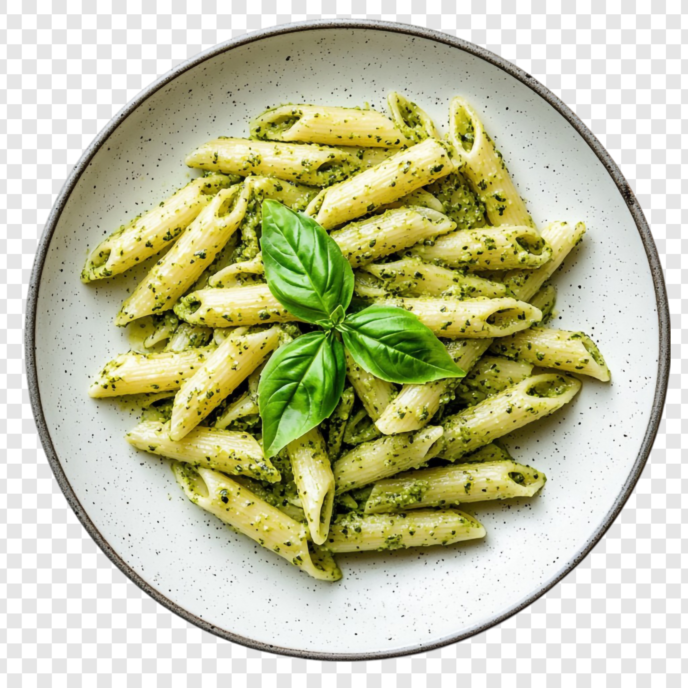

A vibrant and quick meal using fresh basil pesto, garlic, and al dente pasta. Perfect for busy weeknights.
Bring a large pot of salted water to a boil.
Cook the pasta according to package instructions until al dente.
Reserve 1/2 cup of pasta water, then drain the rest.
the pasta with pesto and reserved water until creamy.
Top with Parmesan and pine nuts before serving.